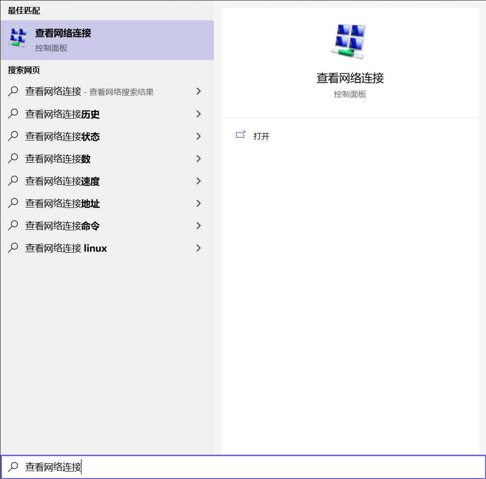
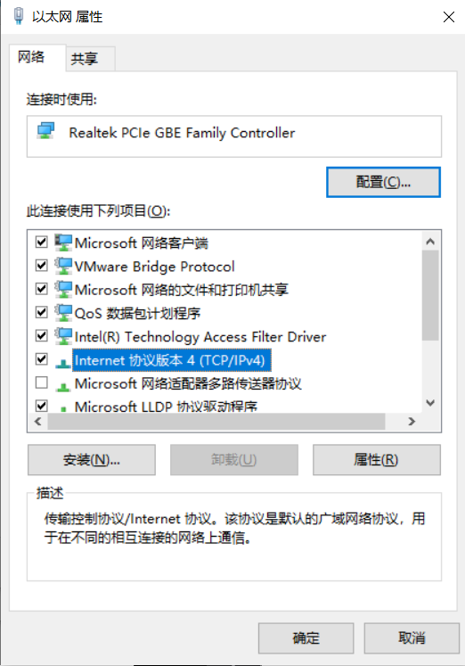
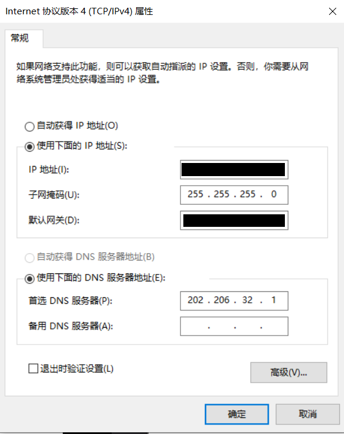

Windows10 系统
按
Win + S组合键打开本地搜索，搜索“查看网络连接”，打开。
双击“以太网”，点击“属性”
双击“Internet 协议版本 4 (TCP/IPv4)”

点击 “使用下面的IP地址” 和 “使用下面的DNS服务器地址”，将注册校园网时得到的IP地址，子网掩码，默认网关都输入进去，在 “首选DNS服务器” 中填入自动DNS服务器地址。

点击确定，再点击确定退出属性界面
Windows7 系统
- 按
Win键打开菜单 - 搜索“网络和共享中心”
- 点击“更改适配器设置”
- 按照Win10配置流程的第2步以后的流程进行配置
Linux 系统
按
Ctrl + Alt + T打开终端查询网卡
$ sudo ifconfig # 这里查到的网卡为eth0 eth0: flags=4163<UP,BROADCAST,RUNNING,MULTICAST> mtu 1500 inet 172.21.0.17 netmask 255.255.240.0 broadcast 172.21.15.255 inet6 fe80::5054:ff:fe42:e75 prefixlen 64 scopeid 0x20<link> ether 52:54:00:42:0e:75 txqueuelen 1000 (Ethernet) RX packets 85903381 bytes 10206032672 (10.2 GB) RX errors 0 dropped 0 overruns 0 frame 0 TX packets 86778159 bytes 13155435740 (13.1 GB) TX errors 0 dropped 0 overruns 0 carrier 0 collisions 0 lo: flags=73<UP,LOOPBACK,RUNNING> mtu 65536 inet 127.0.0.1 netmask 255.0.0.0 inet6 ::1 prefixlen 128 scopeid 0x10<host> loop txqueuelen 1000 (Local Loopback) RX packets 12904466 bytes 1333988684 (1.3 GB) RX errors 0 dropped 0 overruns 0 frame 0 TX packets 12904466 bytes 1333988684 (1.3 GB) TX errors 0 dropped 0 overruns 0 carrer 0 collisions 0修改IP
$ sudo vim /etc/sysconfig/network-scripts/ifcfg-<查到的网卡> #例如：sudo vim /etc/sysconfig/network-scripts/ifcfg-eth0 # 将下列字段的信息修改 IPADDR = <IP> NETMASK = <子网掩码> GATEWAY = <默认网关>修改DNS
$ sudo vim /etc/network/interfaces # 在文件最后加入 dns-nameservers 202.206.32.1重启服务
$ sudo /etc/init.d/networking restart $ sudo /etc/init.d/resolvconf restart
Mac OS 系统
查看网络服务。以太网就是
Etherner，无线网络就是WiFi$ networksetup -listallnetworkservices Etherner查看网卡。和上面Linux类似
$ ifconfig设置IP地址
$ networksetup -setmanual "Ethernet" <IP> <子网掩码> <默认网关>设置DNS服务器
$ networksetup -setdnsservers "Ethernet" 202.206.32.1